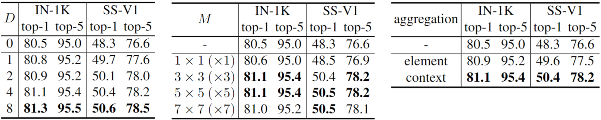

Ablation Study
Effects of the structure dimension D (Left), kernel size M (center), and contextual aggregation (right) on ImageNet-1K and Something-Something-V1.
We introduce a new attention mechanism, dubbed structural self-attention (StructSA), that leverages rich correlation patterns naturally emerging in key-query interactions of attention. StructSA generates attention maps by recognizing space-time structures of key-query correlations via convolution and uses them to dynamically aggregate local contexts of value features. This effectively leverages rich structural patterns in images and videos such as scene layouts, object motion, and inter-object relations. Using StructSA as a main building block, we develop the structural vision transformer (StructViT) and evaluate its effectiveness on both image and video classification tasks, achieving state-of-the-art results on ImageNet-1K, Kinetics-400, Something-Something V1 \& V2, Diving-48, and FineGym.
Given an input video and a query indicated by the red box in (a), the query-key correlation maps in (b) clearly reveal the structures of spatial layout and motion with respect to the query. We here introduce a novel self-attention mechanism, named structural self-attention (StructSA), in (c) that effectively incorporates rich structural patterns of query-key correlation into contextual feature aggregation. The StructSA mechanism consists of two steps: (i) structural query-key attention and (ii) contextual value aggregation. Unlike the vanilla query-key attention where individual correlation values themselves are used as attention scores, the structural query-key attention takes the correlation map as a whole and detect structural patterns from it in attention scoring. The subsequent contextual value aggregation then combines the attention scores together to compute diverse sets of kernel weights that are used for dynamically collecting local contexts of value features.
*Trained with Token Labeling.
AP$^\textrm{b}$ and AP$^\textrm{m}$ indicates box mAP and mask mAP, respectively. We measure FLOPs at $800\times1280$ resolution.
We measure FLOPs using $512 \times 2048$ resolution images.
Effects of the structure dimension D (Left), kernel size M (center), and contextual aggregation (right) on ImageNet-1K and Something-Something-V1.
The query location $i$ is set to the center of the image and the kernel size $M=3 \times 3$. Given (a) input images, we illustrate (b) attention maps of SA, (c) dynamic kernels $\kappa$$^{\mathrm{conv}}_{i,j}$, (d) final attention maps of ConvSA, \ie, aggregated weights of $\kappa$$^{\mathrm{conv}}_{i,j}$, (e) dynamic kernels $\kappa$$^{\mathrm{struct}}_{i,j}$, and (f) final attention maps of StructSA, i.e., aggregated weights of $\kappa$$^{\mathrm{struct}}_{i,j}$, respectively. Note that in (c) and (e), each location $j$ has an aggregation map of the kernel size $M=3 \times 3$ and thus we show enlarged images for three different sampled locations $j$. The figures demonstrate that StructSA contextualizes the entire features in a structure-aware manner considering objects’ layouts or shapes; for instance, StructSA aggregates global contexts distinguishing different parts of an orange (2nd row) or an ostrich (3rd row)
The top row shows the input frames that contain the input spatiotemporal local context (indicated by green boxes) used in the dynamic kernel computation.
The bottom row presents the resulting dynamic kernels
@inproceedings{kim2024learning,
title={Learning Correlation Structures for Vision Transformers},
author={Kim, Manjin and Seo, Paul Hongsuck and Schmid, Cordelia and Cho, Minsu},
journal={Proceedings of the IEEE conference on computer vision and pattern recognition},
year={2024},
}